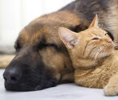

My name is Jessey Miller, I have lived in Billings Montana all my life. My family has moved twice in my life; we are currently staying at my sister's house. I have a brother who is younger than me and a sister who is older than me, I also have three nieces.
I do not want to drive. There are many problems that I have seen with vehicles. I have seen that vehicles cause stress, cost a lot, cause pollution, and on top of that they kill unfortunate animals. However, I do understand the importance of vehicles when it comes to transporting goods, but there are healthier and cheaper ways to get around.
I love animals, we currently have ten cats and two dogs at the house. When we first moved in with my sister, some of the cats did not get along, but now only a couple of them cause any trouble and not that often. My father wanted to raise snakes a couple years ago, so at one time we had fifty snakes, some rats, and some mice. However, we ended up selling or giving away the snakes, rats, and mice. I liked the rats, they seemed very intelligent compared to the mice and much more energetic compared to the snakes.
I want to be a programmer who works for myself. I have taken programming 1 and 2 at West and I am currently taking programming 3, we have just started 3 dimensional programming in Blitz3D. I like to write stories in my freetime if I feel inspired to write. I like to read book series, I tend to reread book series that I like.
